Personvernerklæring
Sist oppdatert: 23. juni 2026
Denne personvernerklæringa gjeld for nettstaden Vyrdepil og alle spel og verktøy som ligg her. Kort sagt: tenestene er laga slik at persondata aldri blir samla inn på ein server. Alt køyrer i nettlesaren din, og den avgrensa informasjonen nokre spel lagrar, blir verande lokalt på eininga di.
Behandlingsansvarleg og kontakt
Vyrdepil er eit hobbyprosjekt laga og drifta av Kjellove Bjørge. Har du spørsmål om personvern, kan du ta kontakt på:
E-post: [klikk for å vise e-postadressa]
E-postadressa er skjult i sidekoden for å unngå at robotar hentar henne automatisk. Klikk lenkja for å sjå og bruke henne.
Kva vi samlar inn — og ikkje
Vyrdepil samlar ikkje inn personopplysningar på nokon server. Vi brukar ikkje informasjonskapslar (cookies), analyseverktøy eller sporing. Det er viktig å skilje mellom cookies og localStorage:
| Cookies | localStorage | |
|---|---|---|
| Blir sendt til server? | Ja — cookies blir automatisk sende med kvar førespurnad til serveren | Nei — localStorage-data forlèt aldri nettlesaren din |
| Kan brukast til sporing? | Ja — den vanlegaste metoden for sporing og reklame på nett | Nei — dataen er berre tilgjengeleg for nettsida på di eining |
| Brukast på denne sida? | ❌ Nei, vi brukar ingen cookies | ✅ Ja, berre for å hugse t.d. toppscore og samlingar lokalt |
localStorage-data ligg berre på di eining, og ingen andre kan sjå den. Du kan slette den når som helst (sjå «Lagringstid og sletting»).
Rettsleg grunnlag og formål
Sidan vi ikkje samlar inn eller behandlar personopplysningar på server, er det inga behandling som krev samtykke eller anna rettsleg grunnlag etter personvernforordninga (GDPR) frå vår side.
- Lokal lagring skjer berre for at du skal kunne ta vare på eiga framgang, eigne lister og innstillingar mellom økter. Dataen blir verande på eininga di.
- Formålet med tenestene er læring og undervisning i grunnskulen.
Eksterne tenester
Dei fleste spel og verktøy fungerer heilt utan internett etter at sida er lasta. Nokre få funksjonar hentar likevel innhald frå eksterne tenester. Når nettlesaren din hentar noko frå ein ekstern server, ser den serveren teknisk sett IP-adressa di (som ved all bruk av nett). Ingen personleg informasjon utover dette blir delt.
| Teneste | Brukt av | Kva som skjer |
|---|---|---|
| Wikimedia Commons (upload.wikimedia.org) | Heimsank, Vidfaren | Hentar kort-/hovudstadsbilete. Wikimedia ser IP-adressa i loggane sine. Ingen speldata blir sendt. |
| PeerJS (0.peerjs.com) | Frødekapp (live-quiz) | Signalserver som koplar nettlesarar saman i ~2 sekund. Ser berre IP — aldri quiz-innhald, namn eller svar. Sjølve spelet går direkte (P2P) mellom nettlesarane. |
| Cloudflare cdnjs (cdnjs.cloudflare.com) | Handsam bilete | Lastar JSZip-biblioteket for ZIP-nedlasting. Ingen bilete eller data blir sendt. |
Geografidataen i Vidfaren (hovudstader, fjell, innsjøar, kart) er bygd på førehand og ligg lokalt — det blir ikkje gjort oppslag mot Wikidata medan du spelar. Berre sjølve hovudstadsbileta blir henta frå Wikimedia.
Hosting og serverloggar
Nettstaden blir levert frå Microsoft Azure i regionen Norway East — det vil seie at sidene blir hosta på tenarar i Noreg (innanfor EØS). Som for all bruk av nett mottek vevtenaren teknisk nødvendig informasjon for å levere sidene — typisk IP-adresse, tidspunkt, kva side som blir henta og nettlesartype. Dette er standard for alle nettstader og blir ikkje brukt av oss til å identifisere eller spore deg. Vi koplar ikkje slike tekniske loggar til noko du gjer i spela.
Born og personvern
Tenestene er laga for grunnskulen og er trygge å bruke med elevar:
- Ingen elevdata blir lagra på server eller delt med tredjepart.
- Tekst ein lærar skriv inn (t.d. elevnamn i Klassekart, Flokkdeilar eller Dagsvegen) blir lagra berre lokalt i nettlesaren på den maskina — aldri sendt nokon stad.
- Inga innlogging eller registrering er nødvendig.
Lokal lagring i kvart spel og verktøy
Nokre spel bruker nettlesaren sin localStorage (under nøkkelen VyrdepilStorage) for å hugse framgang. Under finn du nøyaktig kva kvart einskild spel lagrar, og om det treng ekstern tilgang.
Vis detaljar per spel og verktøy
 Kludre Klodrian
Kludre Klodrian
| Kva | Kvifor |
|---|---|
| Toppscore (eitt tal) | For å vise personleg rekord mellom speløkter |
🌐 Ekstern tilgang: Ingen. Spelet fungerer heilt offline etter at sida er lasta.
Ordsmia
| Kva | Kvifor |
|---|---|
| Toppscore (eitt tal) | For å vise personleg rekord mellom speløkter |
| Historikk over beste ord (inntil 20 ord) | For å vise tidlegare gode ord du har funne |
🌐 Ekstern tilgang: Ingen. Ordsmia brukar lokal ordliste og køyrer heilt i nettlesaren.
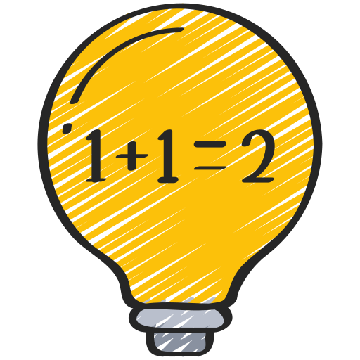
Talsmia| Kva | Kvifor |
|---|---|
| Toppscore (eitt tal) | For å vise personleg rekord mellom speløkter |
| Historikk over beste rundar (inntil 20) | For å vise tidlegare uttrykk, avvik frå mål og poeng |
🌐 Ekstern tilgang: Ingen. Talsmia køyrer heilt i nettlesaren.
 Heimsank
Heimsank
| Kva | Kvifor |
|---|---|
| Kortsamling per kategori (kort-ID, vanskegrad, rekneart, tidspunkt) | For å ta vare på samlinga di mellom speløkter |
| Framgang (poeng, opne kategoriar, merke) | For å hugse kor langt du har kome og kva du har låst opp |
🌐 Ekstern tilgang: Kortbilete blir lasta frå Wikimedia Commons kvar gong du spelar. Wikimedia sine tenarar kan sjå IP-adressa di. Ingen personleg informasjon utover IP-adresse blir delt.
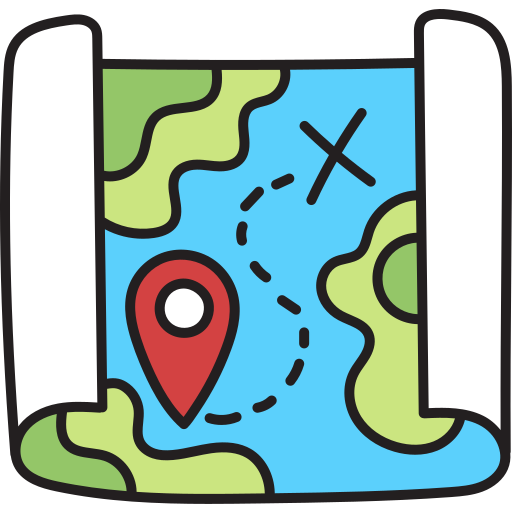
Vidfaren| Kva | Kvifor |
|---|---|
| Beste runde-skår (eitt tal) | For å vise personleg rekord |
| Framgang: samla poeng, oppnådde merke og statistikk | For å halde på framgang og merke mellom økter |
🌐 Ekstern tilgang: Bilete av hovudstader blir lasta frå Wikimedia Commons medan du spelar hovudstad-modus (IP-adressa er synleg for Wikimedia). Sjølve geografidataen ligg lokalt.
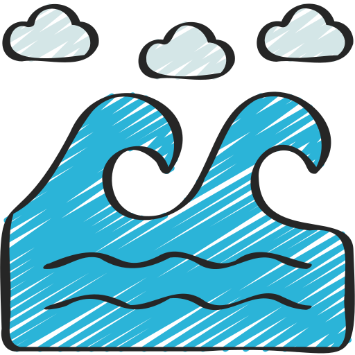
BåreTevling| Kva | Kvifor |
|---|---|
| Aktivt spel (koordinatar og skip) | For at du skal kunne ta pause og halde fram der du slapp |
🌐 Ekstern tilgang: Ingen. Spelet fungerer heilt offline etter at sida er lasta.
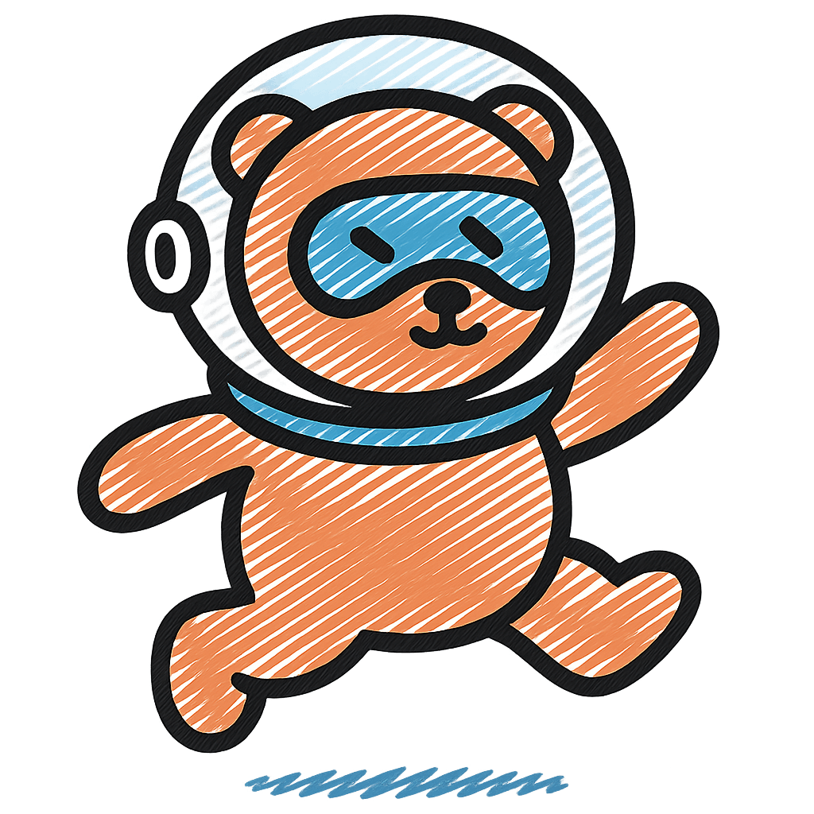
Reknedæsj| Kva | Kvifor |
|---|---|
| Toppscore (eitt tal) | For å vise personleg rekord mellom speløkter |
🌐 Ekstern tilgang: Ingen. Spelet fungerer heilt offline.
 Rettslause Raud
Rettslause Raud
Ingen data blir lagra. Spelet brukar ikkje localStorage eller nokon annan form for lagring.
🌐 Ekstern tilgang: Ingen. Spelet fungerer heilt offline.
Frødekapp
| Kva | Kvifor |
|---|---|
| Lokalt quiz-bibliotek (quiz-ar du lagar) | For å ta vare på eigne quiz-ar mellom økter |
| Quiz-editor-utkast | For å lagre utkast du jobbar med |
| Sist brukte kallenamn | For å sleppe å skrive namn kvar gong (valfritt) |
🌐 Ekstern tilgang: Live-quiz brukar PeerJS for direkte kommunikasjon mellom nettlesarar (WebRTC). Signalserveren ser berre IP-adresser i ~2 sekund under tilkopling — aldri quiz-innhald, namn eller svar. All quiz-data går direkte mellom nettlesarane (P2P).
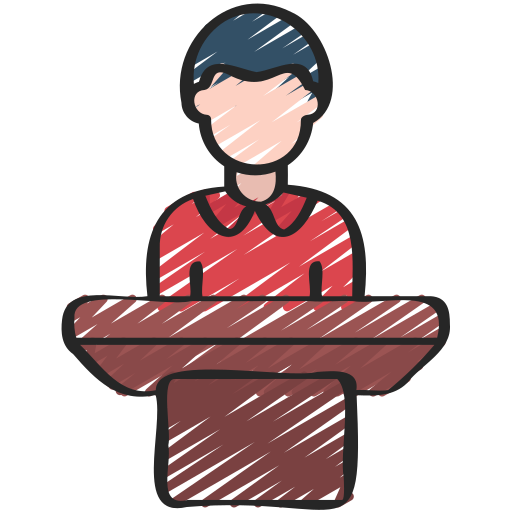
Frødebrett| Kva | Kvifor |
|---|---|
| Quiz-ar (kategoriar, spørsmål, svar, finalerunde) | For å lagre og hente frøder du lagar |
| Lag (siste lagnamn) | For å hugse lagoppsettet mellom speløkter |
🌐 Ekstern tilgang: Ingen. Alt lagrast lokalt. Du kan eksportere/importere frøder som JSON-fil.
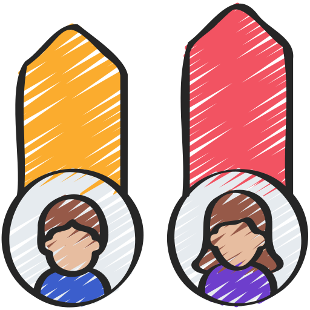
Frødesams| Kva | Kvifor |
|---|---|
| Frødesamsar (spørsmål og svar med poeng) | For å lagre og hente frødesamsar du lagar |
| Lag (siste lagnamn) | For å hugse lagoppsettet mellom speløkter |
🌐 Ekstern tilgang: Ingen. Alt lagrast lokalt. Du kan eksportere/importere som JSON-fil.
Etikktesten
Ingen data blir lagra. Svarene dine blir berre viste i nettlesaren under testen og forsvinn når du lukkar sida.
🌐 Ekstern tilgang: Ingen. Testen fungerer heilt offline.
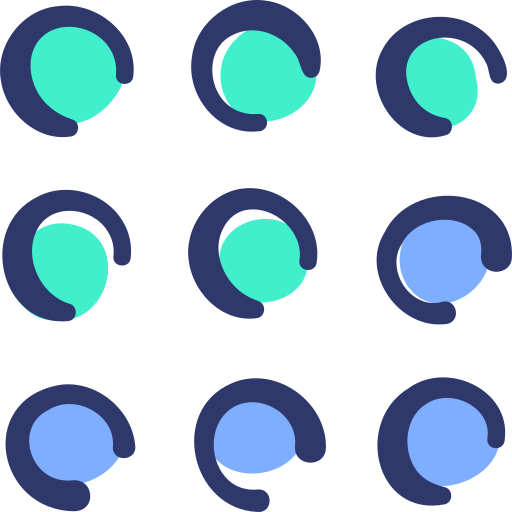
Heite Stavrim| Kva | Kvifor |
|---|---|
| Team-konfigurasjonar, eigne kategorilister, siste oppsett | For å lagre preferansar mellom speløkter |
🌐 Ekstern tilgang: Ingen. Spelet køyrer heilt lokalt.
Ordaklok
| Kva | Kvifor |
|---|---|
| Eigne omgrepslister (titlar, ord-par, alternative svar) | For å hugse listene dine mellom økter |
| Toppscore per liste og modus | For personleg rekord og motivasjon |
| Leitner-progresjon (kva ord du meistrar) | For å prioritere ord du strevar med |
🌐 Ekstern tilgang: Ingen. Køyrer heilt offline. Lister kan delast via URL — då er heile lista pakka inn i sjølve lenkja, ingen tenar er involvert.
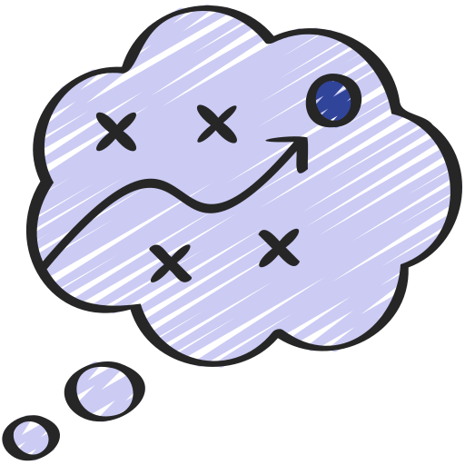
Eikekveik| Kva | Kvifor |
|---|---|
| Auto-lagra siste kart og namngjevne lagra kart (nodar, plassering, farge, koplingar) | For å ta vare på arbeidet ditt mellom økter |
🌐 Ekstern tilgang: Ingen. Verktøyet køyrer heilt lokalt.
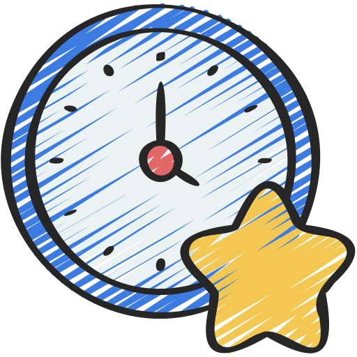
Tidvis| Kva | Kvifor |
|---|---|
| Toppscore (eitt tal) | For å vise personleg rekord |
| Framgang: nivå/XP, merke og statistikk | For å halde på framgang mellom økter |
| Lagra oppsett (modus, retning, vanskegrad, tal oppgåver) | For å hugse det du valde sist |
🌐 Ekstern tilgang: Ingen. Spelet køyrer heilt offline.
BiletFlett
Ingen data blir lagra. Bilete du lastar opp blir berre lese inn i minnet med FileReader API. Når du lukkar sida, er alt borte.
🌐 Ekstern tilgang: Ingen. Verktøyet fungerer heilt offline.
 Reinskore bilete
Reinskore bilete
Ingen data blir lagra. Bilete du lastar opp blir berre behandla i nettlesaren sitt minne.
🌐 Ekstern tilgang: Ingen. Verktøyet fungerer heilt offline.
Klassekart
| Kva | Kvifor |
|---|---|
| Lagra klasseoppsett (elevnamn, plassering, møblar) | For å lagre og hente namngjeve klasseoppsett |
| Flikar / aktive oppsett | For å gjenopprette opne flikar ved neste besøk |
🌐 Ekstern tilgang: Ingen. Elevnamn lagrast kun lokalt — aldri på nokon server. Du kan eksportere/importere oppsett som JSON-fil.
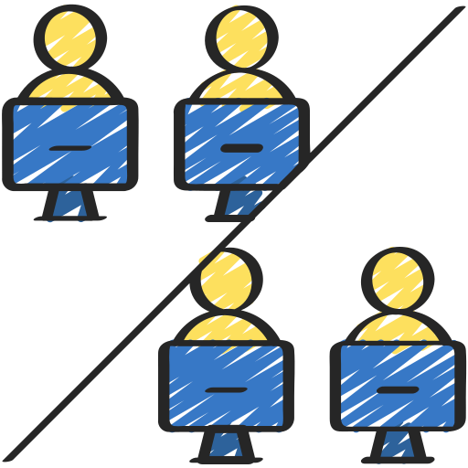
Flokkdeilar| Kva | Kvifor |
|---|---|
| Klasselister med elevnamn | For å gjenbruke same liste på tvers av økter |
| Valfrie relasjonar mellom elevar (berre med «Utvida administrasjon») | For at trekninga skal ta omsyn til konfliktar eller preferansar |
| Hash av PIN-kode (om utvida admin er på) — aldri klartekst-PIN | For å beskytte redigeringa mot uvedkomande |
🌐 Ekstern tilgang: Ingen. Elevnamn og relasjonar lagrast berre lokalt og forlèt aldri eininga di.
Handsam bilete
Ingen data blir lagra. Bilete blir lese inn i minnet og behandla med Canvas API. Når du lukkar sida, er alt borte.
🌐 Ekstern tilgang: JSZip-biblioteket blir lasta frå cdnjs.cloudflare.com (kun for ZIP-nedlasting). Ingen bilete blir sendt nokon stad.
Ordskodde
| Kva | Kvifor |
|---|---|
| Lagra ordskyer: innlimt tekst, ordval og innstillingar | For å opne og redigere skyene seinare utan å lime inn teksten på nytt |
🌐 Ekstern tilgang: Ingen. Teksten du limer inn forlèt aldri nettlesaren.
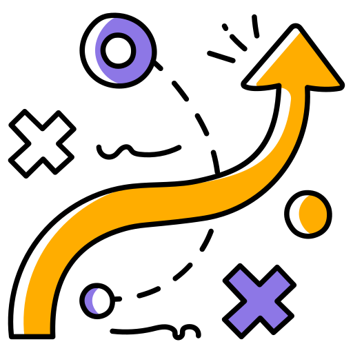
Dagsvegen| Kva | Kvifor |
|---|---|
| Dagsplanar og vekemalar (fag, tider, aktivitetar, notat) | For å hente fram planane att utan å byggje dei på nytt |
| Fagliste med emoji og hjernepause-aktivitetar | For å hugse tilpassingane læraren har gjort |
| Innstillingar, tekstboksar og dagens arbeidskopi | For at skjermen skal sjå lik ut etter omstart |
🌐 Ekstern tilgang: Ingen. Tekst læraren skriv (t.d. elevnamn ved bursdag) lagrast lokalt på maskina — aldri sendt nokon stad. Teikningar blir aldri lagra.
Vis dine lagra data (VyrdepilStorage)
Her ser du alt som er lagra lokalt i nettlesaren din under VyrdepilStorage. Dataen ligg berre på di eining og blir aldri sendt nokon stad.
(opnar når du klikkar på accordion)
Lagringstid og sletting
Lokalt lagra data ligg i nettlesaren din heilt til du slettar den sjølv. Du har full kontroll:
- Bruk «Slett alt» i datavisaren over for å fjerne all Vyrdepil-data med éin gong.
- Eller slett nettlesardata/«nettstadsdata» via innstillingane i nettlesaren din.
- Mange spel og verktøy har òg eigne knappar for å slette eller tilbakestille eigne data.
Dine rettar
Personvernforordninga (GDPR) gjev deg rettar som innsyn, retting, sletting og dataportabilitet. Sidan vi ikkje lagrar personopplysningar om deg på server, har vi ingenting å hente fram eller slette på dine vegner — all lokal data ligg på eininga di og er fullt ut under din kontroll. Har du likevel spørsmål om personvern, er du velkomen til å kontakte oss (sjå over).
Endringar i erklæringa
Erklæringa kan bli oppdatert om tenestene endrar seg. Datoen for siste oppdatering står øvst på sida. Vesentlege endringar vil bli synlege her.